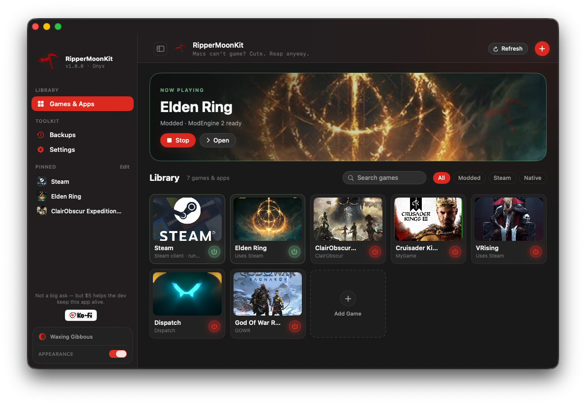

Proof Of Concept
Elden Ring running through GPTK.
These captures show the launcher profile and real gameplay on macOS with the Game Porting Toolkit HUD visible. They are proof of the workflow, not a promise that every Mac or game behaves the same way.
